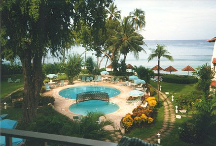
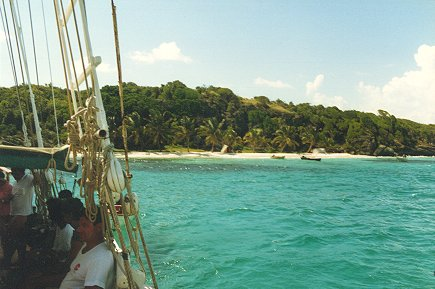
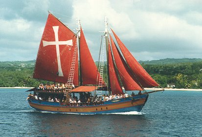
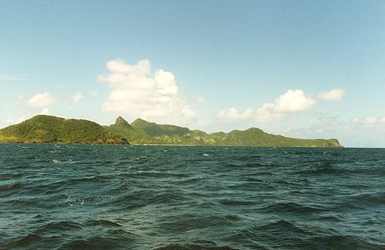

Barbados
October 1985October 1986August 1988July 1989
I spent quite a few holidays here at the Taramind Cove Hotel.
The pool at the Taramind Cove Hotel.
The beach at Taramind Cove (Paynes Bay).
The Jolly Roger.
Day trip to St. Vincent and the Genadines.


Barbados
October 1985
October 1986
August 1988
July 1989
I spent quite a few holidays here at the Taramind Cove Hotel.